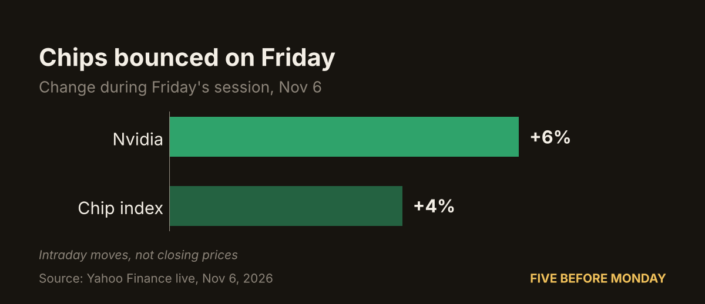
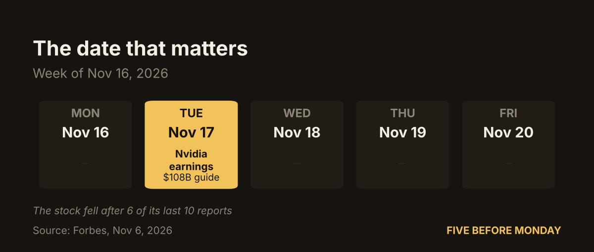

Sample Sunday report · Week of Nov 2–6, 2026
Apple passed Nvidia. Here's why.
This sample is built from our Nov 5–6, 2026 coverage. Figures are as reported by the cited outlet at the time and will have moved since. Members get an issue like this every Sunday.
1. The week in five
- #2: Nvidia's rank by market value after Apple passed it (Yahoo Finance, Nov 5).
- −25%: Nvidia's fall from its Oct 6 record (Forbes, Nov 6).
- $1.4T: market value erased in that fall (Forbes, Nov 6).
- 165K: US jobs added, against roughly 70K expected (Yahoo Finance & Forbes, Nov 6).
- $108B: the guide Nvidia has to deliver on Nov 17 (Forbes, Nov 6).

2. Why it moved
Nvidia lost a quarter of its value in about a month. Coverage this week pointed to three causes, each feeding into the next.
Data-center pushback
<$200
Calls to halt new data centers raised a simple question: will the world need as many chips? Shares slipped under $200 for the first time since August.
Forbes & Yahoo Finance · Nov 5–6
Pricier money
165K
The US added 165K jobs against roughly 70K expected. A strong labor market put a rate hike back on the table, and higher rates make it costlier to fund data-center builds.
Yahoo Finance & Forbes · Nov 6

Buyers in debt
$35B
CoreWeave, one of Nvidia's big customers, carries $35B of debt. AI builders are burning cash to buy chips, which makes Nvidia's own buyers look shakier.
Forbes · Nov 6
Then Friday
Chips bounced during Friday's session, with Nvidia up about 6% and the chip index up about 4%. These were intraday moves, not closing prices.

3. The next 7 days
One date matters most: Nvidia reports on Tuesday, Nov 17. The figure to watch is the $108B guide. History is mixed: the stock fell after 6 of its last 10 reports.

4. Bull vs. bear: Nvidia
The strongest arguments on each side, as they're being made in this week's coverage. This is a map of the debate, not a recommendation.
The bull case
- Still the world's second most valuable company, at $4.83T.
- Chips bounced on Friday, Nvidia about +6% intraday.
- A $108B guide sits on the table for Nov 17.
The bear case
- Calls to halt data centers question future chip demand.
- A hot jobs report revived rate-hike talk.
- Big buyers like CoreWeave carry heavy debt ($35B).
- The stock fell after 6 of its last 10 reports.
5. The numbers
| What | Figure | As of | Source |
|---|---|---|---|
| Apple market value | $5.10T | Nov 5 | Yahoo Finance |
| Nvidia market value | $4.83T | Nov 5 | Yahoo Finance |
| Nvidia vs. Oct 6 record | −25% | Nov 6 | Forbes |
| Market value lost | $1.4T | Nov 6 | Forbes |
| Nvidia, Friday (intraday) | +6% | Nov 6 | Yahoo Finance live |
| Chip index, Friday (intraday) | +4% | Nov 6 | Yahoo Finance live |
| US jobs added vs. expected | 165K vs ~70K | Nov 6 | Yahoo Finance & Forbes |
| CoreWeave debt | $35B | Nov 6 | Forbes |
| Nvidia next report | Nov 17 | Nov 6 | Forbes |
6. How this issue was made
Researched and drafted with AI from the outlets named above. Every figure traces to a page that was opened, and each claim was checked against its source. Intraday figures are labelled as intraday.
Not investment advice. Five Before Monday explains market moves; it does not tell anyone to buy or sell. Do your own research. Full disclaimer.
Join the founding list Or start with the free Saturday brief